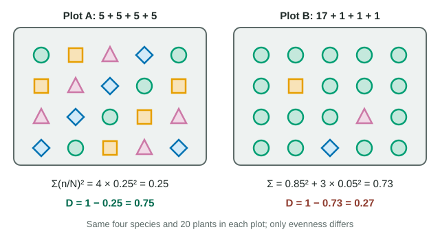

Simpson's diversity index
Simpson's diversity index, D = 1 − Σ(n/N)², is the probability that two individuals chosen at random belong to different species.
Part 1 · Hook
Why this matters
Two meadows each hold the same five kinds of wildflower. In one, every kind is common; in the other, clover covers almost everything. Counting species says they are equally diverse. Your eyes say they are not. Simpson's index, on the formula sheet, puts a number on the difference.
Part 2 · Before you start
What this builds on
Part 3 · Prerequisite check
Quick check before you start
1. What two things does species diversity combine?
- Species richness and relative abundance (evenness)
- Population size and growth rate
- Number of trophic levels and energy flow
Show the answer
Diversity counts how many species there are (richness) and how evenly individuals are spread among them (relative abundance).
- Correct: Species richness and relative abundance (evenness):
- Population size and growth rate:
- Number of trophic levels and energy flow:
2. Which community is more likely to keep functioning if one species declines?
- One with many species, evenly represented
- One dominated by a single species
- One with a single species
Show the answer
When individuals are spread among many species, the loss of one removes a smaller share of the community; diversity tends to support stability.
- Correct: One with many species, evenly represented:
- One dominated by a single species:
- One with a single species:
Part 4 · See it
See it first

Part 5 · Step by step
How it works, step by step
- Each species makes up a fraction n/N of the community.Squaring that fraction gives the chance that two individuals picked at random both belong to that species.
- Adding the squares over all species……gives Σ(n/N)², the chance that two random individuals are the same species.
- Subtracting from 1 flips it.D = 1 − Σ(n/N)² is the chance that two random individuals are different species: higher D, more diversity.
- One common species has a large n/N, and squaring makes it larger still compared with rare species.Dominance by one species pulls D down sharply, while adding a rare species raises D only slightly.
Part 6 · Key ideas
Key ideas
- Worked example. 6 snails, 3 beetles, 1 leech (N = 10). Σ(n/N)² = 0.6² + 0.3² + 0.1² = 0.36 + 0.09 + 0.01 = 0.46. D = 1 − 0.46 = 0.54.
- D runs from 0 (one species) toward 1 (many species, evenly represented). Two equal species give 0.5.
- Same richness can give very different D: five species at 20 each give 0.80; one at 80 and four at 5 give 0.35.
- Forgetting the "1 −" is the classic slip: it reports similarity (0.65) instead of diversity (0.35).
Part 7 · Misconception
A common mistake
The wrong idea: Two communities with the same number of species have the same diversity.
What actually happens: Simpson's index also counts evenness. A community dominated by one species has a much lower index than one with the same species in equal numbers.
Part 8 · Check yourself
Check yourself
Exam-style questions. Anything you miss goes into your review queue.
Data table
Two meadows with the same five species
Ecologists counted the flowering plants in 1 m² quadrats in two meadows. Both meadows contain the same five species.
| Species | Meadow A | Meadow B |
|---|---|---|
| Clover | 20 | 80 |
| Yarrow | 20 | 5 |
| Buttercup | 20 | 5 |
| Plantain | 20 | 5 |
| Daisy | 20 | 5 |
| Total | 100 | 100 |
1. Calculate Simpson's diversity index for meadow A, to two decimal places.
Type a number.
Show the answer
Each species is 20/100 = 0.2 of the total. (0.2)² = 0.04, and five species give Σ = 0.20. D = 1 − 0.20 = 0.80.
- Answer: 0.80
2. Calculate Simpson's diversity index for meadow B, to two decimal places.
Type a number.
Show the answer
Clover: (80/100)² = 0.64. Each other species: (5/100)² = 0.0025, × 4 = 0.01. Σ = 0.65. D = 1 − 0.65 = 0.35.
- Answer: 0.35
3. Both meadows have five species. Why is meadow B's index so much lower?
- Meadow B is dominated by clover, so its species are unevenly represented, and the index counts evenness as well as the number of species.
- Meadow B has fewer individual plants in total, and Simpson's index falls whenever the total number of plants counted in the quadrats is smaller.
- Meadow B has fewer species than meadow A, because four of its species have just five plants each.
- Meadow B's clover plants are larger than meadow A's, and the index weighs each species by the size of its plants.
Show the answer
Richness (5) is the same. In B one species makes up 80% of plants, so two plants picked at random are very likely the same species, which is what a low D means.
- Correct: Meadow B is dominated by clover, so its species are unevenly represented, and the index counts evenness as well as the number of species.: Correct: same richness, very different evenness.
- Meadow B has fewer individual plants in total, and Simpson's index falls whenever the total number of plants counted in the quadrats is smaller.: Both totals are 100.
- Meadow B has fewer species than meadow A, because four of its species have just five plants each.: Both meadows have five species; rare species still count toward richness.
- Meadow B's clover plants are larger than meadow A's, and the index weighs each species by the size of its plants.: The index uses counts of individuals, not their size.
4. A disease kills most of the clover in both meadows. Which prediction is best supported?
- Meadow B loses far more of its plants, because clover made up most of them; meadow A's plants are spread among species.
- Both meadows lose the same share of their plants, because clover is one of five species in each meadow.
- Meadow A loses more plant cover, because a more diverse meadow has more species for the disease to infect.
- Neither meadow changes much, because the other four species immediately take over the space that the dying clover plants leave behind.
Show the answer
Clover is 80% of B's plants but 20% of A's. Losing it removes most of B's plants but only a fifth of A's: more even communities tend to keep functioning when one species declines.
- Correct: Meadow B loses far more of its plants, because clover made up most of them; meadow A's plants are spread among species.: Correct.
- Both meadows lose the same share of their plants, because clover is one of five species in each meadow.: The share differs: 80% in B, 20% in A.
- Meadow A loses more plant cover, because a more diverse meadow has more species for the disease to infect.: The disease attacks clover here, not every species.
- Neither meadow changes much, because the other four species immediately take over the space that the dying clover plants leave behind.: Regrowth takes time, and B has very few plants of the other species to fill the gap.
Data table
A stream bank before and after a fast-spreading plant arrived
A survey of 100 plants along a stream bank was repeated eight years after a fast-growing plant from another continent (species X) began spreading there.
| Species | First survey | Eight years later |
|---|---|---|
| Sedge | 30 | 12 |
| Rush | 25 | 8 |
| Fern | 20 | 6 |
| Mint | 15 | 4 |
| Violet | 10 | 0 |
| Species X | 0 | 70 |
| Total | 100 | 100 |
5. Calculate Simpson's index for the first survey, to three decimal places.
Type a number.
Show the answer
Σ(n/N)² = 0.3² + 0.25² + 0.2² + 0.15² + 0.1² = 0.09 + 0.0625 + 0.04 + 0.0225 + 0.01 = 0.225. D = 1 − 0.225 = 0.775.
- Answer: 0.775
6. Calculate Simpson's index eight years later, to three decimal places.
Type a number.
Show the answer
Σ = 0.7² + 0.12² + 0.08² + 0.06² + 0.04² = 0.49 + 0.0144 + 0.0064 + 0.0036 + 0.0016 = 0.516 (violet, with 0 plants, adds nothing). D = 1 − 0.516 = 0.484.
- Answer: 0.484
7. Species richness was 5 in both surveys. Which statement best describes how the community changed?
- Richness stayed at 5 because species X replaced violet, but evenness fell sharply as X came to make up 70% of the plants.
- Diversity did not change, because the number of species was the same in both surveys and richness is what diversity measures.
- Diversity rose, because a new species arrived, and adding a species to a community raises its diversity index.
- Each native species increased in number, but species X increased faster, which lowered the index.
Show the answer
One species was lost and one gained, so richness is unchanged. The fall in D comes from dominance: X is 70% of plants, so evenness collapsed.
- Correct: Richness stayed at 5 because species X replaced violet, but evenness fell sharply as X came to make up 70% of the plants.: Correct.
- Diversity did not change, because the number of species was the same in both surveys and richness is what diversity measures.: Simpson's index measures evenness as well as richness; it fell from 0.775 to 0.484.
- Diversity rose, because a new species arrived, and adding a species to a community raises its diversity index.: X's arrival came with violet's loss and with heavy dominance, so D fell.
- Each native species increased in number, but species X increased faster, which lowered the index.: Every native species decreased (sedge 30 to 12, and so on).
Part 9 · Summary
Summary
Simpson's diversity index, D = 1 − Σ(n/N)², is the probability that two individuals chosen at random belong to different species. It runs from 0 (one species) toward 1, and it rises with both species richness and evenness. Dominance by one species lowers it sharply; a single rare new species barely changes it. Compare communities, or one community over time, by their D values and explain the change with richness, evenness and the biology behind them.
Part 10 · Up next
What comes next
Part 11 · Connections